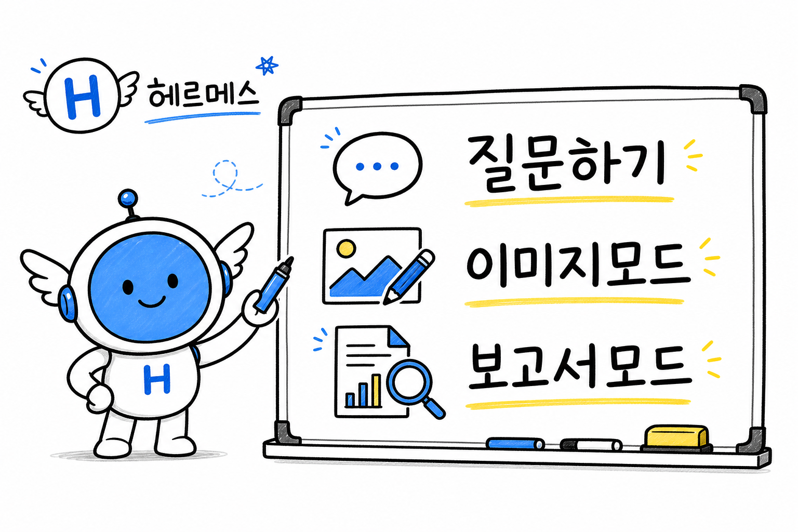

260809 · BEGINNER GUIDE
헤르메스
이용 가이드북
01먼저 목적과 결과 형식을 함께 말하면 됩니다.
02이미지가 필요하면 이미지모드를 붙입니다.
03조사·공유가 필요하면 보고서모드를 요청합니다.
질문 하나로 시작하고, 이미지와 보고서까지 결과물로 받는 법.
2026.08.09 KST · 공개 문서 기반

AI 생성 인포그래픽 · Hermes 공식 로고 또는 공식 제품 이미지 아님
📌 핵심 결론
헤르메스는 원하는 결과와 맥락을 자연어로 말할수록 더 실무적인 답을 만드는 AI 에이전트입니다. 처음에는 ‘무엇을, 어떤 형식으로, 언제까지’만 붙여 질문하세요.
01 · 가장 쉬운 시작
“회의 준비해줘”, “이 링크 5줄 요약해줘”처럼 목적부터 말합니다.
“회의 준비해줘”, “이 링크 5줄 요약해줘”처럼 목적부터 말합니다.
02 · 결과물 요청
이미지가 필요하면 이미지모드, 조사·공유용 문서가 필요하면 보고서모드를 붙입니다.
이미지가 필요하면 이미지모드, 조사·공유용 문서가 필요하면 보고서모드를 붙입니다.
🧭 1. 기본 이용법
헤르메스는 대화형 답변만 하는 도구가 아니라, 설정된 도구를 통해 웹 검색·브라우저·파일·이미지 생성·일정 자동화 등을 연결할 수 있는 에이전트입니다. 다만 가능한 도구와 권한은 설치·플랫폼 설정에 따라 달라집니다.
| 이렇게 말해보세요 | 좋은 이유 |
|---|---|
| “AI 에이전트가 뭔지 초보자 눈높이로 설명해줘.” | 난이도와 결과 형식이 명확합니다. |
| “이 기사 핵심·장점·리스크를 5줄로 정리해줘.” | 분량과 판단 기준을 함께 줍니다. |
| “내일 회의 준비: 확인할 질문 5개와 마무리 멘트 작성해줘.” | 바로 사용할 산출물의 형태가 정해집니다. |
질문 공식:
예: “AI 공부방 초보자를 대상으로, 이미지모드 사용법을 3문장으로 설명해줘.”
목적 + 대상/맥락 + 원하는 형식 + 제약예: “AI 공부방 초보자를 대상으로, 이미지모드 사용법을 3문장으로 설명해줘.”
🖼️ 2. 이미지모드
이미지모드는 이 환경에서 쓰는 간단한 요청 방식입니다. “이미지모드” 뒤에 용도·주제·스타일을 붙이면, 헤르메스가 텍스트 설명으로 끝내지 않고 실제 이미지 생성 도구를 사용해 결과물을 만듭니다.
| 요청 예시 | 기대 결과 |
|---|---|
이미지모드, AI 공부방 홍보 포스터. 밝은 화이트보드 두들 스타일. | 홍보에 쓸 수 있는 세로/가로형 이미지 생성 |
이미지모드, 블로그 썸네일. ‘AI 자동화’가 크게 보이게. | 주제와 사용처에 맞춘 썸네일 이미지 |
하찮은모드, 이 사진을 그림판 낙서처럼 바꿔줘. | 첨부 이미지를 참고한 투박하고 귀여운 재해석 |
- 원하는 용도를 먼저 말합니다: 포스터, 썸네일, 카드뉴스, 발표 표지.
- 비율도 정합니다: 가로형·정사각형·세로형.
- 이미지 속 한글은 짧고 크게 요청하는 편이 깨짐을 줄입니다.
- 실제 인물 사진을 바꿀 때는 첨부 원본을 함께 보내고 보존할 특징을 말합니다.
주의: 이미지 생성은 설정된 이미지 도구가 있을 때만 가능합니다. 고유한 숫자·날짜·사실은 이미지 안에 길게 넣기보다, 생성 후 본문이나 캡션으로 확인하는 편이 안전합니다.
📑 3. 보고서모드
보고서모드는 이 환경에서 구성한 조사·분석·시각화·공개 배포 워크플로입니다. 단순 채팅 요약보다 한 단계 더 나아가, 공개 자료를 조사하고 핵심 판단·반대 의견·리스크를 정리한 뒤 인포그래픽과 공유용 웹페이지까지 만듭니다.
| 요청 예시 | 작업 흐름 |
|---|---|
보고서모드, 2026년 AI 에이전트 시장 전망 | 공개 자료 조사 → 핵심 판단·리스크 → 인포그래픽 → 공개 가이드 페이지 |
보고서모드2, AI 자동화 도입의 장점과 실패 사례 | 조사 결과를 더 투박한 종이 손그림 스타일로 시각화 |
보고서모드3, 생성형 AI 보안 리스크 | 깔끔한 정보형 인포그래픽 중심의 공개 보고서 |
1조사
공식 문서와 공개 자료를 우선 확인해 사실·분석·전망을 구분합니다.
공식 문서와 공개 자료를 우선 확인해 사실·분석·전망을 구분합니다.
2판단
좋은 점만 쓰지 않고 대안, 반대 논리, 실패 조건도 함께 적습니다.
좋은 점만 쓰지 않고 대안, 반대 논리, 실패 조건도 함께 적습니다.
3시각화
핵심을 한 장의 인포그래픽으로 압축해 읽는 부담을 줄입니다.
핵심을 한 장의 인포그래픽으로 압축해 읽는 부담을 줄입니다.
4공유
공개 가능한 내용이면 링크로 열어볼 수 있는 웹페이지로 배포·검수합니다.
공개 가능한 내용이면 링크로 열어볼 수 있는 웹페이지로 배포·검수합니다.
중요: 보고서모드는 이 봇의 운영 워크플로입니다. Hermes Agent의 모든 설치 환경에 같은 이름의 기본 명령으로 내장된 기능이라고 보기는 어렵습니다. 공개 보고서에는 공개 웹 자료와 대화에서 직접 제공된 공개 가능한 내용만 씁니다.
⚖️ 4. 잘 쓰는 사람의 요청 방식
| 애매한 요청 | 더 좋은 요청 |
|---|---|
| “AI 좀 알려줘.” | “AI 에이전트와 챗봇의 차이를 비전공자용 표로 설명해줘.” |
| “이미지 만들어줘.” | “이미지모드, 텔레그램 공지용 정사각 카드뉴스. 흰 배경·파란 포인트·문구는 5단어 이내.” |
| “조사해줘.” | “보고서모드, AI 에이전트 도입 시 보안 리스크. 경영진용, 장점·반대 의견·실행 체크리스트 포함.” |
⚠️ 5. 현실적인 한계와 안전선
- 도구 접근, 로그인 상태, 권한, 웹페이지 정책에 따라 가능한 작업 범위가 달라질 수 있습니다.
- 웹에서 찾은 정보도 틀리거나 오래됐을 수 있습니다. 중요한 금액·계약·의료·법률·투자 판단은 원문과 전문가 확인이 필요합니다.
- 개인정보, 회사 내부자료, 비공개 문서는 공개 보고서나 단체방용 요청에 넣지 않는 편이 안전합니다.
- 좋은 프롬프트는 마법 주문이 아닙니다. 실제로 쓸 결과물인지 검토하고, 수정 요청을 한 번 더 주는 것이 품질을 올립니다.
✅ 6. 바로 복사해 쓸 문장
이 링크를 초보자용으로 5줄 요약해줘. 핵심·장점·한계·결론 순서로.이미지모드, AI 스터디 모집용 가로 포스터. 화이트보드 두들, 밝고 친근하게.보고서모드, AI 에이전트가 바꾸는 사무직 업무. 근거·반대 의견·리스크·실행 체크리스트 포함.
🔎 공개 문서에서 확인할 수 있는 기능
🔎 작성 기준·한계
- 질문: 처음 쓰는 사람이 헤르메스를 어떻게 요청하고, 이미지모드·보고서모드를 언제 쓰면 좋은가?
- 방법: Hermes Agent의 공개 공식 문서에서 도구, 스킬, 이미지 생성, 웹 조사 기능을 확인하고 이 환경의 공개 가능한 요청 규칙을 구분해 설명했습니다.
- 한계: 기능·도구의 활성화 여부는 설치 환경, 인증, 플랫폼 권한에 따라 다릅니다. 이 문서는 특정 환경의 공개형 사용 안내이며 보안 설정 가이드가 아닙니다.
📚 전체 출처 · 클릭하여 펼치기
| 유형 | 자료명 | 제공자·저작자 | 원문 | 날짜 | 라이선스·상태 | 사용 범위 |
|---|---|---|---|---|---|---|
| 공식 문서 | Hermes Agent Documentation | Nous Research | 원문 보기 | 2026-08-09 | 공개 공식 문서 | Hermes 개요, 설치·기능 범위 |
| 공식 문서 | Tools & Toolsets | Nous Research | 원문 보기 | 2026-08-09 | 공개 공식 문서 | 웹·브라우저·이미지 생성 등 도구 범주 |
| 공식 문서 | Skills System | Nous Research | 원문 보기 | 2026-08-09 | 공개 공식 문서 | 온디맨드 스킬과 재사용 지식 설명 |
| AI 생성 이미지 | 헤르메스 이용 가이드 화이트보드 인포그래픽 | OpenAI 이미지 생성 도구 | 보고서 내부 자산 | 2026-08-09 | AI 생성 · 공식 로고 아님 | 상단 시각자료 |